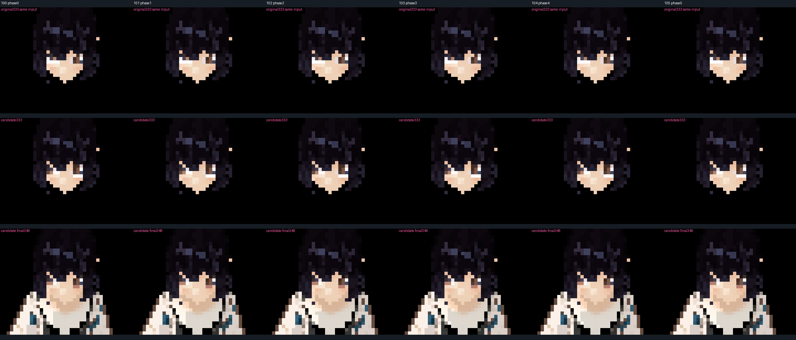
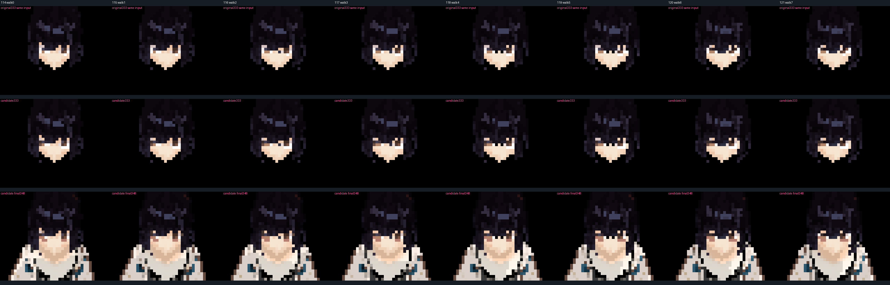
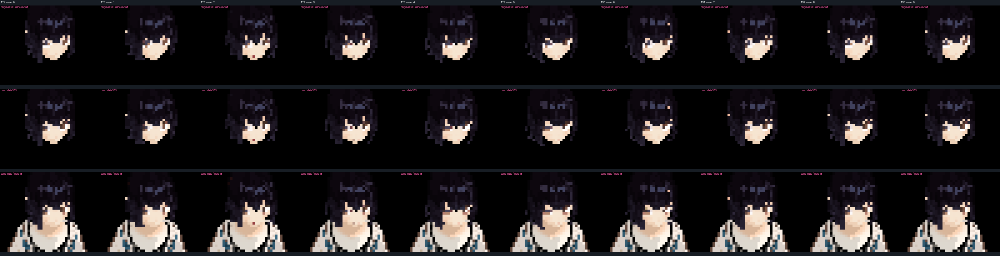
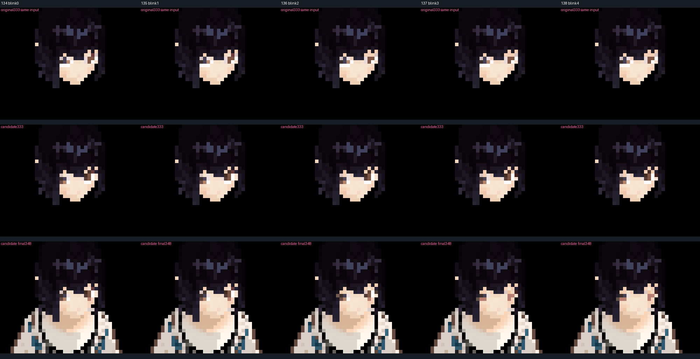

86·87 눈 출처·실제 위상 관측
격리 후보87 미채택. 제품 기본값77 유지. 원본 역할과 색을 같은 캐시 텍셀에서 읽는 연결은 검증했지만, 각 화면 셀의 nearest 재표본만으로 중요한 작은 눈의 형태는 안정되지 않았습니다.
- 기존333 오프스크린 재생: 실제 기존 출력 4종과 차이0. 후보 연결 후 실제29프레임: 이동6·보행8·카메라 상대 위상10·Close5.
- 원본 역할 GPU/CPU 불일치0, 직접 원본 RGB8 509셀 일치, 기존76 보호 RGB339셀 일치. 이 수치가 미관 성공이나 클러스터 안정성을 뜻하지 않습니다.
- 실제 동일 포즈·평가 메쉬에서 0.99997944셀 이동·원위치. 가림 전 캐시 홍채도 eye2 4↔6셀, eye1 3~5셀 및 2종/5종 형태로 변합니다. 실제 가림까지 고정하지 않았습니다.
- 현재 장면 낮밤 시계 자동 진행, 시간21.5238→21.7771, 태양 방향12종. 기존0.72/1 전환은 LegacyClass가.5를 넘으며 다른 출력색을 고르는 경로입니다. 조명 반응과 래스터 오류를 구분해야 합니다.
- Close 원본 getter와 실제 평가 메쉬 사이 1프레임 지연이 관측됐습니다.137·138의 실제 닫힌 결과에 열린 눈을 강제 복구하지 않았습니다. 재개방 평가 완료 프레임은 이번 구간에 없습니다.
- Edit 복귀, 동일 InputSettings 객체·22개 값/장치,45개 native 내용,dirty29·씬·옵션·시간·pipeline·global74 보존. RT30→30. 내부 할당 +33.62MiB는 물리RAM이나 누수 확정값이 아닙니다.
- 내보내기 RAW_MANIFEST의 planes 목록은 한 프레임 이전 리스트를 참조했습니다. 바이너리 각 헤더의 source/frame/serial/view를 따로 검증했습니다. prepare87.py에 다음 실행용 목록 갱신 수정만 준비했고 원본 기록은 덮어쓰지 않았습니다.
상단 두 행만 같은 프레임 기존333/후보333 비교입니다. 세 번째 행과 native 출력은 실제 후보 downstream 결과이며 기존348의 동시 비교로 표시하지 않습니다.
짧은 이동

실제 후보348 GIF · 실제 native 출력
보행

실제 후보348 GIF · 실제 native 출력
실제 0~1셀 상대 위상

실제 후보348 GIF · 실제 native 출력
Close 변형

실제 후보348 GIF · 실제 native 출력
검증·복원 수치 · 기하/광원/형태 추적 · 후보 계약·반례 · 실행 관찰기 · 동일 입력 비교·수명 · 오프라인 재검사
원배율 PNG는 frame*-native.png입니다. raw86.zip/raw87.zip은 원본 완료 패킷이며 불확실·중간 파일을 완료 결과로 승격하지 않습니다. 다음 수정은 source 특징의 공동 셀/레이어 배치와 실제 부분가림을 함께 다뤄야 하며, 현재 role-cache nearest를 성공 경로로 활성화하면 안 됩니다.